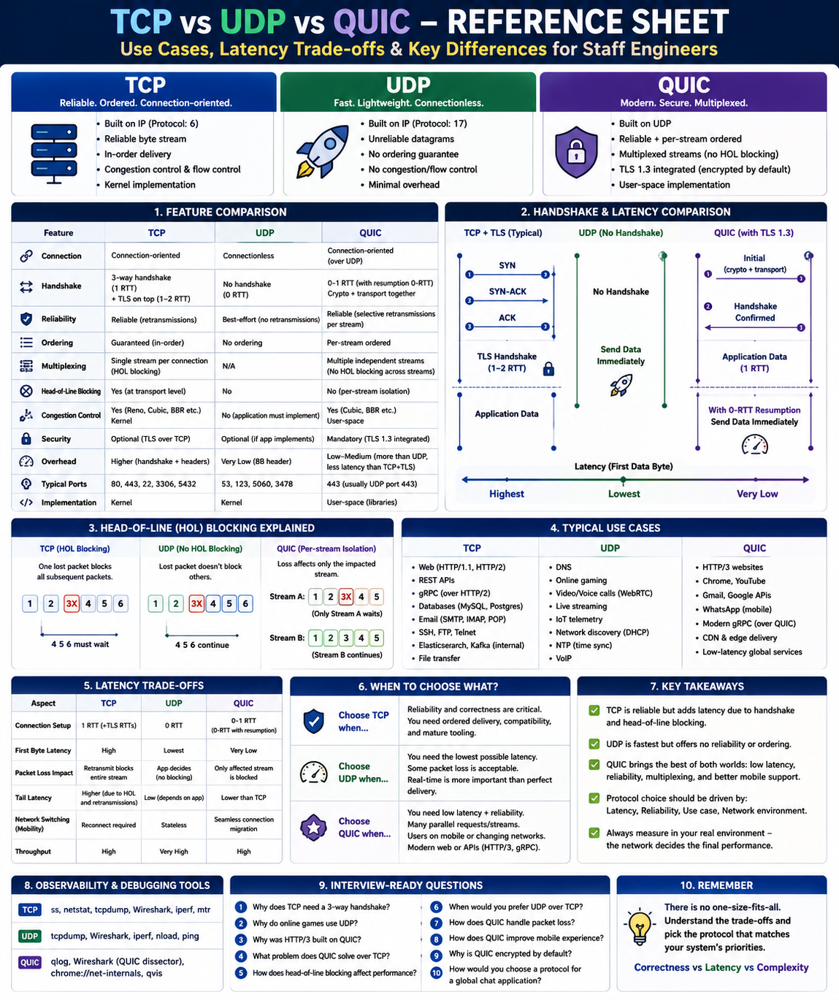

Use cases, latency trade-offs, and when to choose each protocol
Why It Matters
Protocol selection is a system design decision that directly impacts latency, reliability, scalability, CPU usage, user experience, and cost. A Staff Engineer must justify why a protocol is chosen, what trade-offs it introduces, and how it affects the overall architecture.
TCP
Reliable applications
Priority: Correctness
UDP
Real-time communication
Priority: Lowest Latency
QUIC
Modern Internet apps
Priority: Low Latency + Reliable
TCP — Transmission Control Protocol
Characteristics
Typical Use Cases
✅ Advantages
Reliable · Auto-retransmit · Congestion control · Mature ecosystem · Excellent observability
❌ Disadvantages
1-RTT handshake · Head-of-line blocking · Higher latency · Kernel update required for innovation
Choose TCP when: every byte matters, data loss is unacceptable, transactions must be correct, or broad compatibility is required.
UDP — User Datagram Protocol
Characteristics
Typical Use Cases
✅ Advantages
Zero setup overhead · Lowest latency · Minimal CPU · Broadcast + multicast support
❌ Disadvantages
No reliability · No ordering · No congestion control · App must implement retries
Choose UDP when: milliseconds matter, small packet loss is acceptable, or real-time experience is more important than perfect delivery.
QUIC — Quick UDP Internet Connections
Characteristics
Typical Use Cases
✅ Advantages
0-RTT setup · No HoL blocking · Built-in TLS · Multiplexing · Mobile connection migration
❌ Disadvantages
Higher CPU · Harder to debug (encrypted) · Depends on UDP path · Less mature tooling
Choose QUIC when: building modern Internet services, users switch networks frequently, tail latency matters, or many concurrent streams need independent reliability.
Head-of-Line Blocking — The Key Difference
TCP (HTTP/2)
One lost packet blocks all streams on that connection.
UDP
No waiting. Loss is the app's problem.
QUIC (HTTP/3)
Loss affects only the impacted stream.
Latency Comparison
| Stage | TCP | UDP | QUIC |
|---|---|---|---|
| Connection setup | 1 RTT handshake + TLS (1–2 RTT more) | 0 RTT | 0–1 RTT (TLS included) |
| First-byte latency | Highest | Lowest | Very Low |
| Packet loss recovery | Retransmit blocks entire stream | App decides | Per-stream only |
| Tail latency (P99) | Higher (HoL blocking) | Depends on app | Lower than TCP |
| Network switching | TCP reconnect needed | Stateless | Seamless migration |
Full Feature Comparison
| Feature | TCP | UDP | QUIC |
|---|---|---|---|
| Reliable delivery | ✅ | ❌ | ✅ |
| Ordered delivery | ✅ | ❌ | ✅ (per stream) |
| Retransmission | ✅ | ❌ | ✅ |
| Flow control | ✅ | ❌ | ✅ |
| Congestion control | ✅ | ❌ | ✅ |
| Built-in encryption | ❌ (TLS separate) | ❌ | ✅ (TLS 1.3) |
| Multiplexed streams | ❌ (HoL blocks) | N/A | ✅ |
| Connection migration | ❌ | N/A | ✅ |
| Latency | Medium | Lowest | Low |
| CPU overhead | Low | Lowest | Higher |
| Debug tooling | Excellent | Good | Harder (encrypted) |
Staff Engineer Decision Framework
| Scenario | Protocol | Reason |
|---|---|---|
| REST APIs | TCP | Correctness and broad compatibility |
| Database replication | TCP | Ordered, reliable delivery |
| SSH / FTP | TCP | Command/file ordering required |
| Online gaming | UDP | Fresh state > delayed accurate state |
| Video conferencing | UDP | Better to drop frames than delay them |
| DNS queries | UDP | Small request/response, no setup needed |
| IoT telemetry | UDP | Lightweight, fire-and-forget |
| HTTP/3 websites | QUIC | Faster setup, no HoL blocking |
| Mobile applications | QUIC | Connection migration (Wi-Fi ↔ Cellular) |
| CDN edge delivery | QUIC | Lower perceived latency globally |
| Financial transactions | TCP | Zero tolerance for loss |
Staff Engineer Thinking
Junior
TCP is reliable, UDP is fast
Senior
Use TCP for APIs, UDP for games
Staff asks
Common Interview Questions
Key Takeaways
